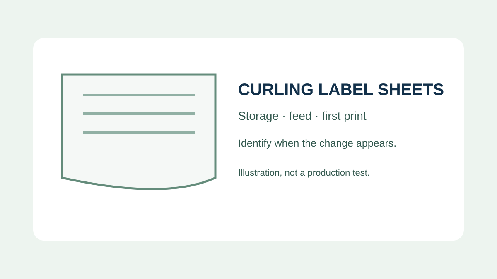
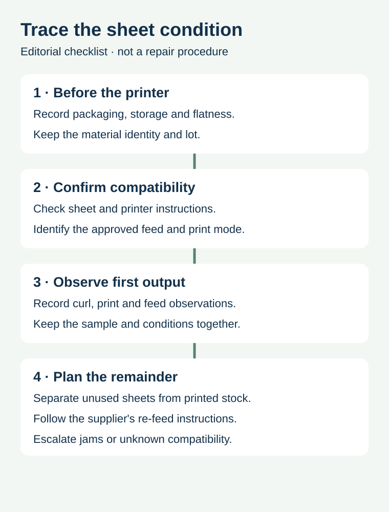

A small food brand prints a short run of jar labels on sheets. The first sheet curls at the output tray and the operator is tempted to put the unused portion back through the printer. Before deciding what to do, identify whether the sheet was already curled, whether it is compatible with the printer, and what the sheet supplier permits after a pass through the device.
Keep unused sheets protected, follow the specific printer and label instructions, and observe the first print before committing the run. A curled sheet is a symptom; it does not by itself identify storage, material or equipment as the cause.

Check the sheet before it goes into the machine
Keep the sheet's product and lot identity and record its condition when the packaging is opened. If the sheet already bows or the liner is damaged, a later print observation will not show when the change began. Store unused material as directed by its supplier. A comparison between a protected pack and material with unknown exposure is useful only if that difference is recorded.
HERMA's storage and processing guidance describes keeping adhesive materials protected from moisture and climatic variation. Its recommendations concern its products; confirm the actual storage instructions for the sheet construction you are buying.
Match the sheet to the printing route


Confirm whether the supplied construction is intended for the printer technology and model, and ask the equipment owner which feed path and media setting are appropriate. A sheet can be dimensionally compatible yet unsuitable for the process or intended final use. Do not change machine temperatures, disassemble a printer or force a jammed sheet through the device based on an editorial guide.
HERMA's sheet-label instructions recommend checking the device manufacturer's feed instructions and say its sheets should be printed once. Those instructions are product-specific; use the actual label supplier's instructions for the stock you own.
| Record | What to check | Why it matters |
|---|---|---|
| Sheet | Product, construction, lot and condition before feeding | Distinguishes incoming condition from later change |
| Storage | Packaging, known temperature and humidity exposure | Preserves context without inventing missing history |
| Printer | Model, print technology, feed path and approved media setting | Connects the sample to the actual process |
| First output | Sheet position, curl, print quality and feed result | Records what actually happened |
| Remainder | Unused sheets versus already printed or partly used sheets | Prevents an unsupported second pass |
Do not assume a partly used sheet can be re-fed
Plan the number of labels and the arrangement before printing. A sheet with labels removed may behave differently from a full, unprinted sheet. Ask the sheet supplier and printer manufacturer whether the intended re-feed is supported. Do not treat leftover positions as available for a later printer pass merely because the backing still looks intact.
For a hypothetical bakery with multiple product versions, compare printing a smaller approved sheet or batching compatible jobs against handling and stock waste. Keep artwork revisions and quantities separate even when designs share a page. The multi-SKU sheet-layout guide addresses the arrangement and count; this article addresses the physical handling of the sheet.
Compare a symptom with controlled observations
If an unused sheet is flat and curls after printing, retain the actual output and record the printer, feed method and conditions. If it was already curved before printing, retain an identified unprinted sample and its known storage history. Neither observation proves a single cause. Ask the relevant supplier or equipment owner what comparison is appropriate before changing multiple inputs at once.
Check the printed label on the actual finished package for the intended use. Printer feed, print durability and adhesion are different questions. A sheet that prints cleanly is not automatically suitable for a damp jar or refrigerated pack. The in-house versus outsourced printing guide helps compare the overall work, and roll versus sheet formats addresses equipment and application tradeoffs.
Send the actual sheet and printer details
Share label dimensions, sheet format, printer model and technology, the approved artwork, the package and application conditions, and photographs of the unprinted and printed sheet where available. Prepare a label specification inquiry; the contact page opens an email draft and lists email or WhatsApp for attachments. Sheet compatibility and available services require confirmation for the project.